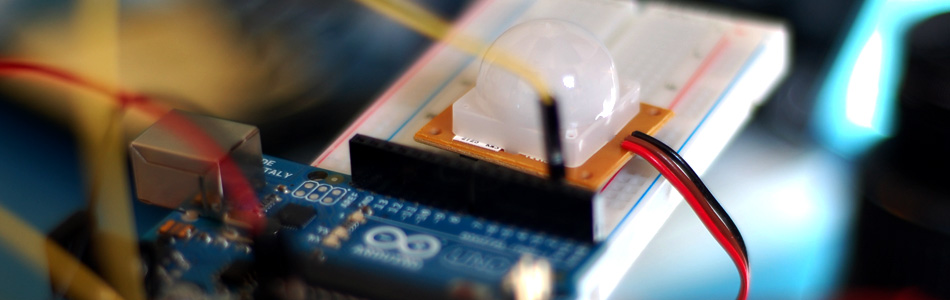

Did It Move? Detecting Motion with PIR + Arduino

"The colors of the wires can vary greatly. Looking at the unit from the top, the middle wire is ground, the left-most wire is the alarm, and the right-most is the power."
Security alarms, time lapse cameras, and those house-lights that turn on when you walk by all have something in common... Motion detection. Motion detection can be a very handy thing in installation art, interactive walls, and other times you need a cheep way to know when people are around.
PIR or Passive Infrared is a common method of motion detection that measure changes in heat to signal the change. The basic model is that they take IR (heat) images on 2 sensors at different times, when they differ, they know something has changed. This particular sensor from SparkFun beings the signal pin low when it senses a change.
{kind=link}
Hooking it up
Hooking one up to your Arduino is pretty simple, but you need to make sure not to fall for the manufacturer's trap. The red wire is V+ as you would think, the brown wire is ground, NOT the black wire. The black wire is the signal wire. To make matters even worse, the manufacturer uses a B/W image to show you what wire is what.
Aside from power, the signal pin connects to any digital pin on your Arduino but also needs a 10k pullup resistor between the signal and 5V.
The reason for the resistor is that the signal pin is something called an open-collector, meaning it is as if it was not connected to anything at all when nothing is signaled. When motion is sensed, it connects the pin to ground. So we use the resistor so when we read the value from that pin when no motion is detected it looks HIGH. Without the resistor the pin would be floating around and the read value would randomly float between HIGH and LOW, and we don't want that.
Code
The code for this is pretty simple. When it starts up, it needs 2 seconds to take an image to compare to. When we see the signal pin go low, we print some text to the serial terminal (you can replace that with any code you want) and wait 2 seconds again before checking.
You could make the code a little more sophisticated to do away with the 2sec delay after motion is sensed, but I found that the signal pin triggered on and off for a few seconds after it first sensed motion, so that delay is just to take care of that.
int pirPin = 2; //digital 2 void setup(){ Serial.begin(9600); pinMode(pirPin, INPUT); } void loop(){ int pirVal = digitalRead(pirPin); if(pirVal == LOW){ //was motion detected Serial.println("Motion Detected"); delay(2000); } }
Article taken from bildr.org with minor changes - I am the original author of this content